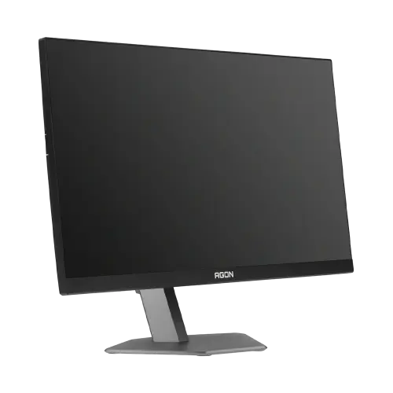
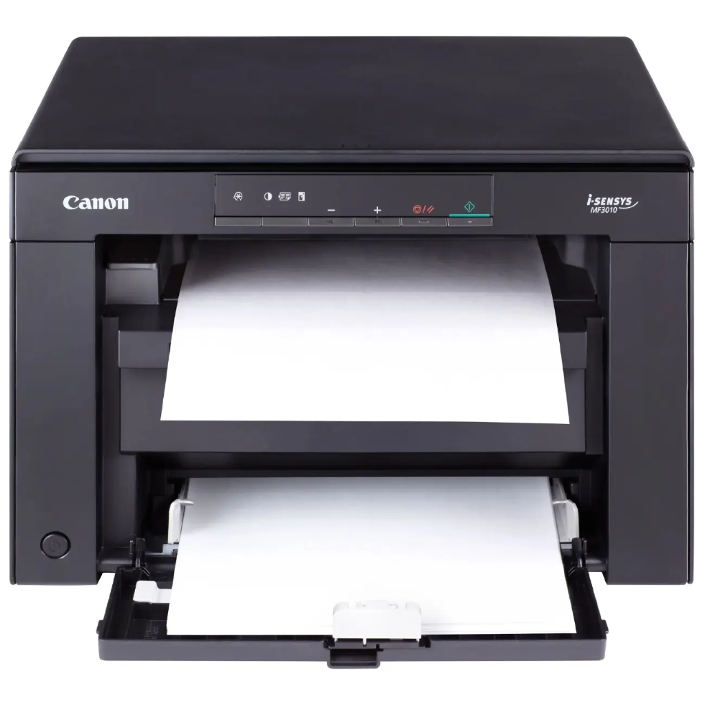
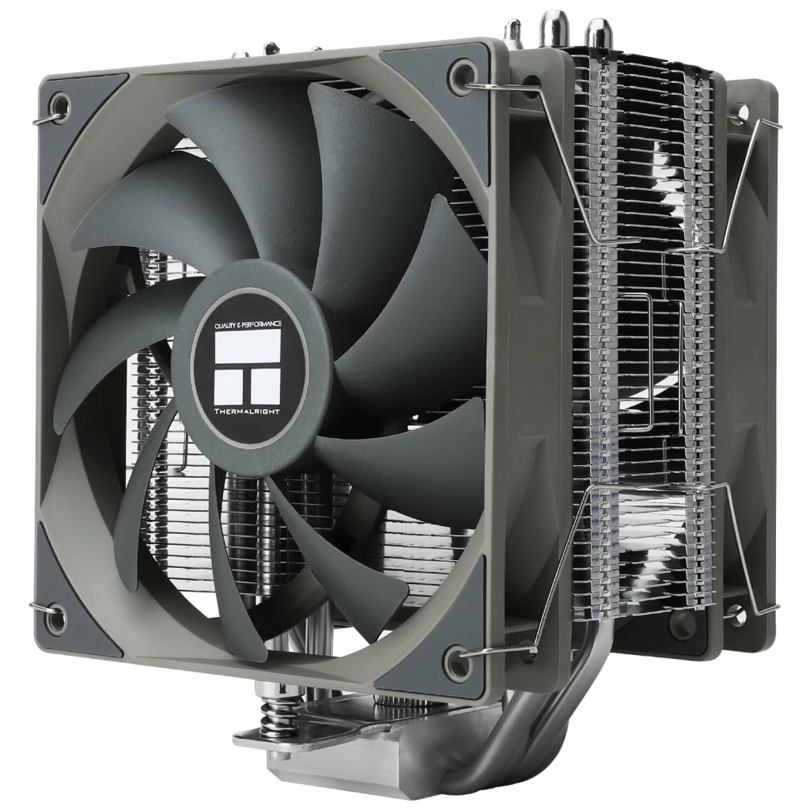
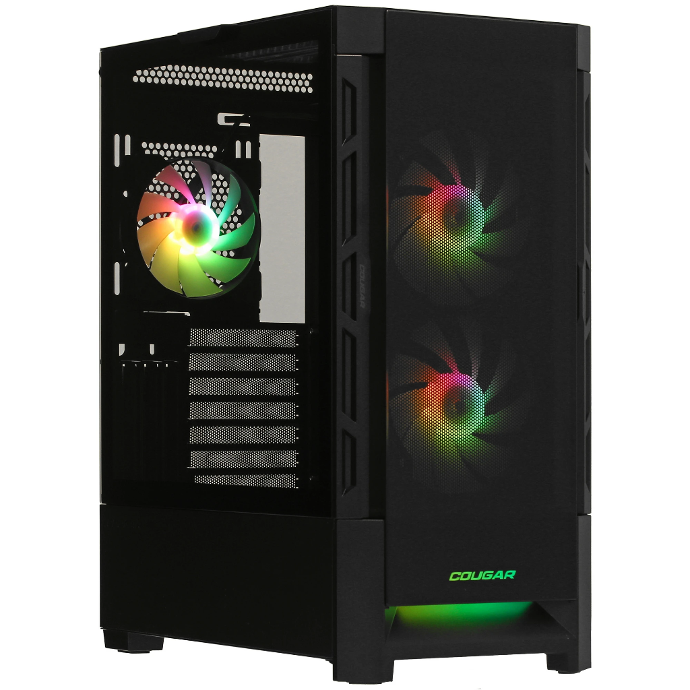
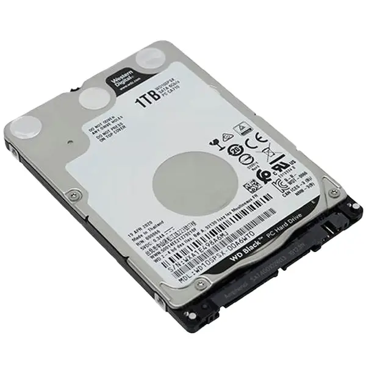
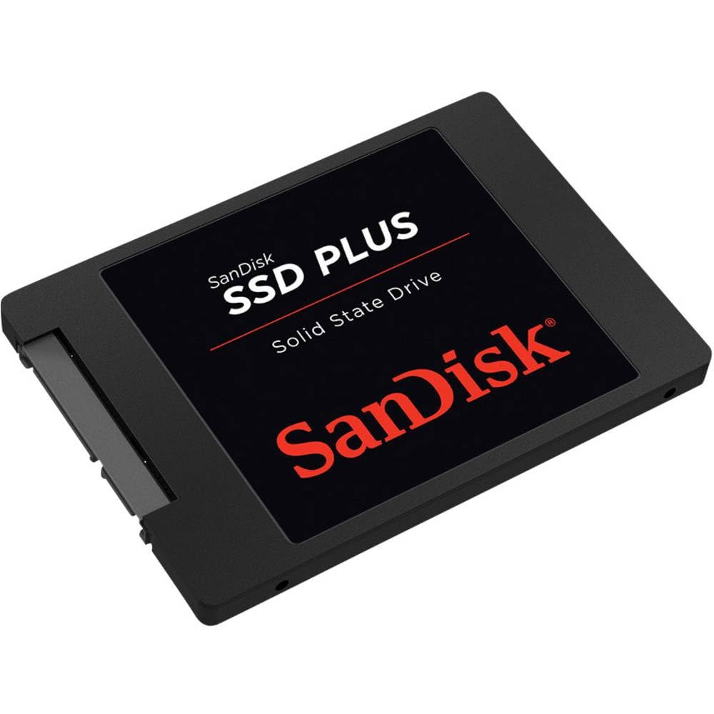

Kompyuter nima? Kompyuter — turli axborotlarni qabul qilish, qayta ishlash, doimiy saqlash va foydalanuvchiga taqdim etishga mo‘ljallangan universal elektron hisoblash mashinasidir.
Qurilmalarning tuzilishi va vazifasini bilish sizga vazifangizga mos kompyuterni to‘g‘ri tanlash va undan unumli foydalanish imkonini beradi.
Kompyuter Qurilmalarining Tasnifi: Ichki va Tashqi Qurilmalar
Daftarga yozib olish uchun konspekt
Kompyuterning barcha apparat vositalari (Hardware) joylashgan o‘rni va bajaradigan vazifasiga ko‘ra 2 ta katta guruhga bo‘linadi:
1. Tashqi qurilmalar
Tizimli blokdan tashqarida
Ta’rifi: Inson bilan kompyuter o‘rtasidagi axborot almashinuvi (kiritish va chiqarish)ni ta’minlovchi vositalar bo‘lib, tashqi portlar (USB, HDMI, Audio) orqali ulanadi.
Vazifasiga ko‘ra 2 ta guruhga bo‘linadi:
A) ASOSIY TASHQI QURILMALAR (Ishlash uchun shart — 3 ta)
Ta’rifi: Kompyuterning ishlashi, hisob-kitoblar, ma’lumotlarni qayta ishlash va tizim barqarorligini ta’minlovchi yuragi va miyasi. Tizimli blok korpusi ichida yagona elektron tizim sifatida birlashadi.
Muhim xususiyati: Ushbu qurilmalarsiz kompyuter umuman ishga tusha olmaydi!
Eslatma: Doimiy axborot saqlovchi disklar (SSD va HDD) ham tizimli blok korpusi ichida joylashadi.
1-GURUH
Tashqi Qurilmalar (Asosiy va Qo‘shimcha)
Tizimli blokdan tashqarida joylashib, axborot kiritish va chiqarishni ta’minlovchi vositalar
Asosiy & Qo‘shimcha
Asosiy Tashqi Qurilmalar (Minimal Ishchi To‘plam)
3 ta zaruriy qurilma
Ushbu qurilmalarsiz foydalanuvchi kompyuter bilan odatiy tarzda ishlay olmaydi:

Haqiqiy mahsulot: Monitor
#01
Monitor (Displey)
Monitor / Display (Asosiy Chiqarish)
Asosiy Chiqarish Qurilmasi
Monitor — videokartadan uzatilgan elektr signallarini inson ko‘zi ilg‘aydigan tasvirlar, matnlar va videoga aylantiruvchi asosiy vizual chiqarish vositasidir.
Hayotiy misol:
Katta va tiniq deraza oynasi — kompyuter ichidagi butun raqamli olamni xira emas, yorqin va haqiqiy ranglarda ko‘rish imkonini beradi.
Yaxshiroq bo‘lsa nima beradi?
Yuqori aniqlikdagi (2K/4K) va yuqori chastotali (144Hz+) monitor bilan harakatlar o‘ta ravon bo‘ladi, matnlar tiniq ko‘rinadi va uzoq soat ishlaganda ham ko‘z aslo charchamaydi.
Muhim fakt:
Monitorning kadr yangilanish chastotasi (masalan, 60Hz, 144Hz) soniyasiga kadr necha marta yangilanishini bildiradi — chastota qancha yuqori bo‘lsa, ko‘z shuncha kam toliqadi va harakatlar silliq ko‘rinadi.
Klaviatura — kompyuterga matn, raqamlar va boshqaruvchi buyruqlarni kiritish uchun xizmat qiluvchi asosiy vositadir. Tugma bosilganda maxsus skan-kod protsessorga uzatiladi.
Hayotiy misol:
Yozuv mashinkasi yoki pianino klavishlari — har bir bosilgan tugma o‘ziga xos tovush va belgi kodiga aylanib kompyuterga aniq uzatiladi.
Yaxshiroq bo‘lsa nima beradi?
Sifatli (mexanik) klaviatura matn terish tezligini oshiradi, 50–100 million martagacha bosishga chidaydi va ergonomik shakli tufayli uzoq yozganda barmoq hamda bilak toliqmaydi.
Muhim fakt:
Klaviaturalar membrana (ovozsiz, arzon) va mexanik (har bir tugmada mustaqil prujinali pereklyuchatel bo‘lib, 50–100 mln marta bosishga chidamli) turlarga bo‘linadi.
Turi: Membrana / MexanikUlanish: USB simli / BluetoothTugmalar soni: 104 (Full) / 87 (TKL)
Haqiqiy mahsulot: Sichqoncha
#03
Sichqoncha
Mouse (Grafik Manipulyator)
Asosiy Kiritish / Boshqarish
Sichqoncha — grafik interfeysdagi obyektlarni qulay boshqarish uchun manipulyatordir. U kursor harakatini ta’minlaydi, fayllarni ochish va dasturlarni boshqarish imkonini beradi.
Hayotiy misol:
Virtual ekrandagi qo‘lingiz — xuddi barmog‘ingiz bilan obyektlarni ushlab, kerakli joyga surayotgandek ekranda erkin boshqaruvni ta’minlaydi.
Yaxshiroq bo‘lsa nima beradi?
Yuqori sezgirlikdagi optik sensor (DPI) orqali kursor ekranda mikron aniqligida yuradi, ergonomik shakli tufayli qo‘l mushaklari toliqmaydi va qo‘shimcha dasturlanuvchi tugmalar beradi.
Muhim fakt:
Zamonaviy optik va lazerli sichqonchalar stol yuzasini soniyasiga minglab marta mikrosuratga olib, harakat yo‘nalishi va tezligini (DPI aniqligida) yuqori aniqlikda hisoblaydi.
Qo‘shimcha Tashqi Qurilmalar (Ixtiyoriy Vositalar)
5 ta kengaytma qurilmasi
Ushbu qurilmalar muayyan vazifalar (chop etish, skanerlash, masofaviy aloqa) uchun ehtiyojga qarab qo‘shiladi:

Haqiqiy mahsulot: Printer
#04
Printer
Printer (Qog‘ozga Chiqarish)
Qo‘shimcha Chiqarish
Printer — elektron hujjatlar, jadvallar, retseptlar va fotosuratlarni qog‘ozga yoki maxsus plyonkalarga bosib chiqaruvchi (chop etuvchi) qurilmadir.
Hayotiy misol:
Shaxsiy mini-bosmaxona — ekrandagi virtual hujjat, rasm va topshiriqlarni jismonan ushlab bo‘ladigan qog‘oz varag‘iga aylantirib beradi.
Yaxshiroq bo‘lsa nima beradi?
Lazerli yoki uzluksiz siyohli zamonaviy printer bilan 1 ta varaq tannarxi bir necha tiyinga tushadi, daqiqasiga 30+ varaq tez bosadi va oylab ishlatilmasa ham siyohi qurib qolmaydi.
Muhim fakt:
Ofis va ta’limda asosan Lazerli printerlar (quruq toner kukuni bilan daqiqasiga 25–40 varaqni juda tez va arzon chiqaradi) hamda rangli Siyohli printerlar keng qo‘llaniladi.
Skaner — qog‘ozdagi hujjatlar, fotosuratlar yoki kitob sahifalarini yorug‘lik nurlari bilan o‘qib, kompyuterda saqlanadigan raqamli fayl (PDF, JPG) shakliga aylantiruvchi vositadir.
Hayotiy misol:
Hujjatlar uchun yuqori aniqlikdagi skaner-kamera — qog‘ozdagi matn va fotosuratlarning har bir nuqtasini raqamli faylga aylantiradi.
Yaxshiroq bo‘lsa nima beradi?
Yuqori optik aniqlik (1200+ DPI) qog‘ozdagi eng mayda detallarni ham tiniq saqlaydi, avtomatik qog‘oz uzatgich (ADF) esa 50 varaqli kitobni bir necha daqiqada to‘liq arxivlab beradi.
Muhim fakt:
Skanerlar OCR dasturlari yordamida qog‘ozdagi matnlarni avtomatik tarzda Word dasturida tahrirlanadigan oddiy matnga aylantirib bera oladi.
Kolonka va naushniklar — kompyuterning ovoz kartasi uzatgan elektr signallarini inson eshitadigan tovush to‘lqinlariga aylantiruvchi akustik vositalardir.
Hayotiy misol:
Jonli konsert zali yoki teatr akustikasi — kompyuterdagi elektr to‘lqinlarini inson qulog‘i quvonib eshitadigan jonli havo tebranishiga aylantiradi.
Yaxshiroq bo‘lsa nima beradi?
Sifatli akustika yoki naushnik fazoviy 7.1 atrof-muhit tovushini (Spatial Audio) yaratadi, musiqadagi barcha nozik notalarni eshittiradi va tashqi shovqinlarni to‘liq yutadi (ANC).
Muhim fakt:
Zamonaviy naushniklarda faol shovqinni so‘ndirish (ANC) tizimi mavjud bo‘lib, u tashqi atrof-muhit shovqinlarini mikroskopik teskari to‘lqinlar orqali bartaraf etadi.
Veb-kamera — real vaqt rejimida video tasvir va ovozni raqamli formatga o‘tkazib, kompyuterga kirituvchi optik qurilmadir. U masofaviy darslar va videokonferensiyalar uchun xizmat qiladi.
Hayotiy misol:
Televideniye telekamerasi — sizning harakatingiz va yuz ifodalaringizni soniyasiga 30–60 marta suratga olib, internetdagi suhbatdoshingizga yetkazadi.
Yaxshiroq bo‘lsa nima beradi?
Full HD / 4K kamera qorong‘i xonada ham tiniq tasvir uzatadi, yuzingizga avtomatik fokus qiladi va o‘rnatilgan aqlli mikrofoni xonadagi begona shovqinlarni filtrlab ovozingizni tiniq oladi.
Muhim fakt:
Zamonaviy veb-kameralardagi infraqizil (IR) datchiklar foydalanuvchining yuzini 3D formatda tanib, kompyuterga parolsiz kirish (Windows Hello) xavfsizligini ta’minlaydi.
Tasvir ruxsati: 1080p FHD / 4KKadr tezligi: 30 / 60 FPSO‘rnatilgan mikrofon va avtofokus
Haqiqiy mahsulot: Flesh-disk
#08
Flash-disk (Fleshka)
USB Flash Drive (Tashqi Xotira)
Kiritish / Chiqarish
Flash-disk — ma’lumotlarni kompyuterlar o‘rtasida oson ko‘chirish va saqlash uchun mo‘ljallangan ixcham vositadir. Unga fayl yozish ham, undan fayl o‘qish ham mumkin.
Hayotiy misol:
Hujjatlar uchun ixcham cho‘ntak sumkasi — barcha kerakli fayllarni cho‘ntakka solib, uydan maktabga yoki ofisga olib yurish imkonini beradi.
Yaxshiroq bo‘lsa nima beradi?
Tezkor USB 3.2 yoki Type-C fleshka yordamida 10–20 GB hajmli og‘ir filmlar va arxivlarni daqiqalab kutmasdan, bir necha soniya ichida o‘ta tez ko‘chirib olish mumkin.
Muhim fakt:
Fleshkalarda hech qanday aylanuvchi mexanik qism yo‘q — ma’lumotlar yarimo‘tkazgichli flesh-chiplarda elektr quvvatisiz ham 10 yildan ortiq xavfsiz saqlanadi.
Kompyuterning hisoblash, xotira, quvvat va aloqa vazifalarini bajaruvchi asosiy a’zolari
7 ta asosiy komponent
Haqiqiy mahsulot: CPU
#01
Protsessor
CPU — Central Processing Unit
Ichki Asosiy Qurilma
Protsessor — kompyuterning asosiy hisoblash markazi (miyasi) hisoblanadi. U barcha arifmetik-mantiqiy amallarni va dastur buyruqlarini bajaradi hamda boshqa barcha qurilmalar ishini muvofiqlashtiradi.
Hayotiy misol:
Katta korxonaning bosh direktori yoki oliy toifali hisobchisi — kelgan topshiriqlarni navbati bilan bir zumda hisob-kitob qilib, qolgan barcha bo‘limlarga vazifa taqsimlaydi.
Yaxshiroq bo‘lsa nima beradi?
Kuchliroq protsessor bilan og‘ir dasturlar (video montaj, 3D modellashtirish, dasturlash) umuman qotmaydi, o‘yinlarda kadrlar tezligi (FPS) oshadi va operatsiyalar soniyada bajariladi.
Muhim fakt:
Zamonaviy protsessorlar soniyasiga milliardlab amal bajaradi (3–5 GHz) va ularning mitti kremniy kristali ichiga inson sochidan minglab marta ingichka bo‘lgan milliardlab mikroskopik tranzistorlar joylashtirilgan.
Takt chastotasi (GHz)Yadrolar soni (Cores/Threads)Kesh xotira (L1, L2, L3)Ishlab chiqaruvchilar: Intel / AMD
Haqiqiy mahsulot: RAM
#02
Operativ Xotira
RAM — Random Access Memory
Vaqtinchalik Xotira
Operativ xotira — ayni paytda ishlab turgan dasturlar, ochiq fayllar va operatsion tizim jarayonlari ma’lumotlarini saqlab turadigan o‘ta tezkor xotiradir. Protsessor barcha amallarni bevosita RAM orqali tez bajaradi.
Hayotiy misol:
Ish stolining kengligi — stol qancha katta bo‘lsa, usta shuncha ko‘p kitob, hujjat va asboblarni yoyib qo‘yib, arxivga bormasdan birdaniga tez ishlay oladi.
Yaxshiroq bo‘lsa nima beradi?
Hajmi katta bo‘lsa (masalan 16–32 GB), bir vaqtning o‘zida 40 ta brauzer sahifasi, Photoshop, o‘yin va musiqani ochiq qoldirsangiz ham kompyuter sekinlashmaydi va qotib qolmaydi.
Muhim fakt:
RAM uchuvchan xotiradir — ya’ni kompyuter o‘chirilishi bilan uning ichidagi barcha ma’lumotlar tozalanadi. RAM qancha ko‘p bo‘lsa, bir vaqtning o‘zida shuncha ko‘p dastur qotmasdan ishlaydi.
Ona plata — barcha ichki qismlarni (protsessor, xotira, videokarta, disklar) va tashqi portlarni yagona elektron zanjirga bog‘lovchi bosh platadir. U qismlar o‘rtasida elektr quvvati va tezkor axborot almashinuvini ta’minlaydi.
Hayotiy misol:
Shaharning zamonaviy avtomagistrallari va asab tizimi — shahardagi barcha binolar va barcha tana a’zolari bir-biri bilan shu keng yo‘llar orqali tezkor bog‘lanadi.
Yaxshiroq bo‘lsa nima beradi?
Sifatliroq ona plata kompyuterga kelajakda kuchliroq yangi protsessor va videokartalar qo‘yish (upgrade) imkonini beradi, barqaror elektr yetkazib detallar umrini uzaytiradi.
Muhim fakt:
Ona platada kompyuterni yoqish paytida barcha qurilmalarni sinovdan o‘tkazuvchi va operatsion tizimni ishga tushiruvchi maxsus BIOS / UEFI mikrosxemasi joylashgan.
Video karta — kompyuterdagi raqamli grafik axborotni qayta ishlab, monitor ekraniga tasvir shaklida chiqaradi. U 3D grafika, video tahrirlash, muhandislik dasturlari va sun’iy intellekt hisoblashlari uchun xizmat qiladi.
Hayotiy misol:
O‘ta tezkor professional rassom — protsessor aytgan sonli buyruqlarni soniyasiga 100–200 martalab to‘liq rang-barang tasvirlarga va harakatli animatsiyalarga aylantirib chizib beradi.
Yaxshiroq bo‘lsa nima beradi?
Zamonaviy kuchli videokarta 3D o‘yinlarni 2K/4K ultra grafikalarda o‘ynash, murakkab 3D videolarni daqiqalarda render qilish va sun’iy intellekt (AI) modellarini lokal ishlatish imkonini beradi.
Muhim fakt:
Zamonaviy video karta o‘zining mustaqil grafik protsessori (GPU) va maxsus video xotirasi (VRAM) bilan jihozlangan bo‘lib, markaziy protsessordan grafik yuklamani to‘liq olib tashlaydi.
Quvvat bloki — rozetkadagi 220 Voltli o‘zgaruvchan tokni kompyuter qismlari talab qiladigan past kuchlanishli doimiy tokka (+12V, +5V, +3.3V) aylantirib, har bir detalga xavfsiz yetkazib beradi.
Hayotiy misol:
Xonadondagi transformator va inson yuragi — ko‘chadagi yuqori kuchlanishni xavfsiz holatga keltirib, barcha organlarga kerakli o‘lchamda quvvat (tok) haydaydi.
Yaxshiroq bo‘lsa nima beradi?
Sifatli quvvat bloki (80 PLUS Gold/Platinum) elektr toki to‘satdan o‘ynaganda qimmat detallarni yonib ketishdan asraydi, elektr energiyani kam sarflaydi va mutlaqo shovqinsiz ishlaydi.
Muhim fakt:
Quvvat bloki kompyuterning xavfsizlik qalqonidir. Elektr toki keskin o‘zgarganda u qimmatbaho protsessor va ona platani kuyishdan asraydi. Sifat belgisi "80 PLUS" sertifikatidir.
Quvvati: 500W – 1000WSamaradorlik: 80 PLUS Bronze / GoldTuri: Modulli / Standart

Haqiqiy mahsulot: Kuler
#06
Sovutish Tizimi
CPU Cooler & Radiator
Termal Nazorat
Sovutish tizimi — protsessor va boshqa qismlar ishlaganda ajralib chiqadigan yuqori issiqlikni o‘ziga yutib, tashqariga chiqaradi. U qismlarning qizib ketishi va ishdan chiqishining oldini oladi.
Hayotiy misol:
Avtomobil radiatori yoki muzdek konditsioner — dvigatel qizib ketib to‘xtab qolmasligi uchun unga tinimsiz sovuq havo puflab, issiqlikni tashqariga haydaydi.
Yaxshiroq bo‘lsa nima beradi?
Kuchli kuler o‘rnatilsa, protsessor qizib sekinlashmaydi (trottling bo‘lmaydi), og‘ir yuklamada ham kompyuter parraklari baqirmay jimjit ishlaydi va protsessor umri bir necha yilga uzayadi.
Muhim fakt:
Yuklama ostida protsessorlar 80–90°C gacha qiziydi. Agar kuler yoki termopasta bo‘lmasa, protsessor bir necha soniya ichida qizib ketib, avtomatik ravishda o‘z-o‘zidan o‘chadi.
Turi: Havo sovutish (Kuler) / Suyuqlik (SVO)Issiqlik tarqatish (TDP 150–250W)Termopasta sifati

Haqiqiy mahsulot: Korpus
#07
Kompyuter Korpusi
Chassis / PC Case (Tizimli Blok Qobig‘i)
Himoya va Konstruksiya
Korpus — kompyuterning barcha ichki qismlarini mexanik zarba, chang va shikastlanishdan himoya qiluvchi metall va shisha qoplamadir. U barcha qismlarni mustahkam va tartibli joylashtirish asosidir.
Hayotiy misol:
Mustahkam zamonaviy uy karkasi — jihozlarni chang, shamol va zarbalardan asraydi hamda shamollatish tirqishlari orqali toza havo aylanishini ta’minlaydi.
Yaxshiroq bo‘lsa nima beradi?
Sifatli korpusda to‘g‘ri havo oqimi (airflow) hosil bo‘lib detallar 10–15°C salqinroq ishlaydi, chang filtrlari ichini toza tutadi va katta o‘lchamli videokartalar bemalol sig‘adi.
Muhim fakt:
Korpus shunchaki metall quti emas — uning ichidagi to‘g‘ri aerodinamik havo oqimi (old paneldan sovuq havoni kiritib, orqadan issiq havoni chiqarish) qismlarning uzoq yillar barqaror ishlashini ta’minlaydi.
Magnit va yarimo‘tkazgichli xotira vositalarining ishlash tamoyillari hamda amaliy farqlari
Chuqurlashtirilgan tahlil
Doimiy Xotira nima uchun kerak?
Operativ xotiradan (RAM) farqli o‘laroq, doimiy xotira (ROM/Storage) kompyuter o‘chirilganda ham ma’lumotlarni butunlay saqlab qoladi.
Operatsion tizim (Windows, Linux), barcha o‘rnatilgan dasturlar, hujjatlar, fotosuratlar va videolar aynan ushbu qurilmalarda saqlanadi.

HDD (Qattiq Disk)
Magnitli Texnologiya
Ishlash tamoyili:
Aylanuvchi magnit disklar (plastinalar) va o‘qish/yozish kallagidan iborat elektromexanik qurilma. Kallak disk yuzasiga tegmasdan, magnit qatlamdagi 0 va 1 zaryadlarini o‘qiydi.
Hayotiy misol:
Katta kutubxona arxivi — kitoblar juda arzon va terabaytlab uzoq saqlanadi, lekin kerakli kitobni topish uchun mexanik javonlarni aylantirib biroz kutish kerak.
Yaxshiroq bo‘lsa nima beradi?
Yuqori tezlikdagi (7200 RPM, katta keshli) HDD o‘nlab yillik oilaviy foto, video va zaxira arxivlarni o‘ta hamyonbop narxda xavfsiz saqlash imkonini beradi.
Afzalligi: 1 Gigabayt hajm narxi juda arzon; katta hajmli zaxira arxivlar uchun juda qulay.
Kamchiligi: Sekin ishlaydi (80–160 MB/s), mexanik harakat tufayli zarbaga o‘ta ta’sirchan, shitirlagan shovqini bor.

SSD (Yarimo‘tkazgichli Disk)
Elektron Flash-xotira
Ishlash tamoyili:
Hech qanday harakatlanuvchi mexanik qismlarga ega emas. Ma’lumotlar NAND flesh-xotira mikrosxemalariga elektr zaryadlari ko‘rinishida bir zumda yoziladi va o‘qiladi.
Hayotiy misol:
Har bir ma’lumotni bir zumda aytib beruvchi chaqqon yordamchi — mexanik qismlari yo‘q, barcha fayllar elektr signallari orqali soniyaning mingdan birida ochiladi.
Yaxshiroq bo‘lsa nima beradi?
Tezkor NVMe M.2 SSD bilan kompyuter 6–8 soniyada yonadi, eng og‘ir dastur va o‘yinlar bir zumda ochiladi, kompyuter qimirlaganda yoki tushib ketganda ham ma’lumotlar shikastlanmaydi.
Afzalligi: O‘ta yuqori tezlik (500 – 7000 MB/s), mutlaqo shovqinsiz (0 dB), zarba va silkinishga o‘ta chidamli.
Kamchiligi: 1 Gigabayt narxi HDD ga nisbatan qimmatroq; yozish sikllari soni cheklangan.
HDD va SSD: Asosiy Ko‘rsatkichlar Taqqosi
Xususiyat va parametr
HDD (Klassik qattiq disk)
SSD (Yarimo‘tkazgichli drayver)
G‘olib / Tavsiya
O‘qish va yozish tezligi
80 – 160 MB/s (Sekin)
500 – 7000 MB/s (40 baravargacha tez)
SSD (Mutlaq g‘olib)
Tizim (Windows) yuklanishi
40 – 90 soniya
6 – 12 soniya
SSD
1 GB xotira narxi
Ancha arzon (arzon katta hajm)
Nisbatan qimmatroq
HDD (Hamyonbop)
Zarba va silkinishga chidamlilik
Zaif (tushib ketsa shikastlanadi)
Juda mustahkam (qismlar qo‘zg‘almas)
SSD
Shovqin darajasi
Mexanik shitirlash eshitiladi
0 dB — Mutlaqo jimjit
SSD
Elektr energiya sarfi
6 – 10 Watt (ko‘proq energiya sarflaydi)
1 – 3 Watt (energiyani tejaydi)
SSD
Qaysi birini tanlash kerak? Amaliy maslahatlar
Faqat SSD oling, agar:
Kompyuteringiz chaqqon ishlashini, Windows bir necha soniyada yuklanishini, dasturlar bir lahzada ochilishini istasangiz. Noutbuklar uchun albatta SSD tanlanishi shart.
HDD oling, agar:
Katta hajmli arxiv ma’lumotlarni, videolarni, seriallarni, videokuzatuv kameralari yozuvlarini arzon narxda saqlash kerak bo‘lsa. Tezlik emas, arzon katta sig‘im muhim bo‘lganda HDD ayni muddao.
Oltin qoida (Gibrid tizim):
Eng ideal konfiguratsiya: 512 GB M.2 NVMe SSD (operatsion tizim va dasturlar uchun) + 1 TB yoki 2 TB HDD (katta hajmli arxivlar uchun).
4-QISM
Umumiy Xulosa va Taqqoslash Jadvali
Darsdagi barcha qurilmalarning joylashuvi, toifasi va asosiy vazifalari jamlanmasi
Xulosa ma’lumotnoma
#
Qurilma nomi
Inglizcha atamasi
Joylashuvi
Qurilma toifasi
Asosiy bajaradigan vazifasi
1
Protsessor
CPU (Central Processing Unit)
Ichki
Hisoblash miyasi
Barcha hisob-kitoblar, mantiqiy amallar va dastur buyruqlarini bajaruvchi bosh markaz
2
Operativ xotira
RAM (Random Access Memory)
Ichki
Vaqtinchalik xotira
Ayni paytda ishlab turgan dastur va jarayonlar ma’lumotlarini saqlovchi tezkor xotira
3
Ona plata
Motherboard / Mainboard
Ichki
Bosh bosma plata
Barcha qismlarni yagona zanjirga bog‘lab, o‘zaro aloqani ta’minlovchi asab tizimi
4
Video karta
GPU (Graphics Processing Unit)
Ichki
Grafik ishlovchi
Grafik axborotni qayta ishlab, monitor ekraniga tasvirni chiqarish
5
Quvvat bloki
PSU (Power Supply Unit)
Ichki
Elektr ta’minoti
220V tokni past kuchlanishli doimiy tokka aylantirib, qismlarga taqsimlash
6
Sovutish tizimi
Cooler / Radiator
Ichki
Termal himoya
Protsessor va qismlardan chiquvchi yuqori issiqlikni tashqariga chiqarib sovutish
7
Korpus
Chassis / PC Case
Ichki
Konstruksiya va himoya
Ichki qismlarni jismoniy shikastdan himoyalash va to‘g‘ri havo oqimini tashkil qilish
8
Monitor
Display / Screen
Tashqi
Asosiy vizual chiqarish
Raqamli axborotni inson ko‘zi ko‘radigan tasvir va matnga aylantirib berish
9
Klaviatura
Keyboard
Tashqi
Asosiy matn kiritish
Matn, son va boshqaruv buyruqlarini kompyuterga kiritish
10
Sichqoncha
Mouse
Tashqi
Asosiy manipulyator
Ekrandagi kursor yordamida obyektlarni boshqarish va buyruq berish
11
Printer
Printer
Tashqi
Qo‘shimcha chiqarish
Hujjatlar va tasvirlarni qog‘ozga chop etib berish
12
Skaner
Scanner
Tashqi
Qo‘shimcha kiritish
Qog‘ozdagi tasvir va matnlarni raqamli faylga aylantirib kiritish
13
Kolonka / Naushnik
Speakers / Headphones
Tashqi
Qo‘shimcha chiqarish
Audio signallarni inson eshitadigan tovush to‘lqinlariga aylantirib berish
14
Veb-kamera
Webcam
Tashqi
Qo‘shimcha kiritish
Jonli video tasvir va ovozni yozib olib kompyuterga uzatish
15
Flash-disk (Fleshka)
USB Flash Drive
Tashqi
Kiritish va chiqarish
Fayllarni kompyuterlar o‘rtasida oson ko‘chirish va saqlash
16
Qattiq disk (HDD)
Hard Disk Drive
Ichki / Tashqi
Doimiy magnit xotira
Katta hajmdagi ma’lumotlar va arxivlarni arzon narxda uzoq muddat saqlash
17
SSD drayver
Solid State Drive
Ichki / Tashqi
Tezkor doimiy xotira
Operatsion tizim va dasturlarni bir necha soniyada ochuvchi yuqori tezlikdagi xotira
O‘zingizni Tekshiring: 20 ta Savolli Katta Test
Ushbu darsda o‘rganilgan barcha 17 ta qurilma, ichki va tashqi tasnif, xotira turlari bo‘yicha bilimlaringizni sinovdan o‘tkazing:
Onlayn Test Markazi
Talabalarga test havolasini ulashish va natijalarni Telegram hamda Google Sheets'da qabul qilish
Kompyuter o‘chirilganda undagi barcha ma’lumotlar o‘chib ketadigan, faol dasturlar ishlaydigan tezkor xotira qaysi?
To‘g‘ri javob: C (RAM). Operativ xotira uchuvchan (vaqtinchalik) xotira bo‘lib, u faqat kompyuter ishlab turgan vaqtda ma’lumotlarni saqlaydi. Elektr toki uzilishi bilan undagi ma’lumotlar tozalanadi.
2-Savol / 20
Quyidagi qurilmalardan qaysi biri tashqi ASOSIY kiritish qurilmasi hisoblanadi?
To‘g‘ri javob: C (Klaviatura). Klaviatura kompyuterga matn, son va boshqaruv buyruqlarini kiritish uchun xizmat qiluvchi asosiy tashqi kiritish vositasidir. Monitor — chiqarish, Printer — qo‘shimcha chiqarish qurilmasidir.
3-Savol / 20
SSD drayverining klassik magnitli HDD qattiq diskiga nisbatan eng asosiy ustunligi nimada?
To‘g‘ri javob: B. SSD drayveri flesh-mikrosxemalarda ishlagani uchun harakatlanuvchi mexanik qismlarga ega emas, shovqinsiz ishlaydi va HDD dan 5–40 baravargacha tezroqdir.
4-Savol / 20
Kompyuterning barcha ichki qismlarini yagona elektron zanjirga bog‘lovchi bosh bosma plata nima deyiladi?
To‘g‘ri javob: A (Ona plata). Ona plata barcha ichki komponentlar (CPU, RAM, GPU, disklar) va tashqi portlarni o‘zaro bog‘lovchi bosh elektron magistraldir.
5-Savol / 20
Quyidagilardan qaysi biri tizimli blok ichida joylashgan ICHKI qurilma hisoblanadi?
To‘g‘ri javob: C (Quvvat bloki). Quvvat bloki tizimli blok korpusi ichida joylashib, 220V tokni past kuchlanishga aylantirib beradi. Skaner, printer va veb-kamera esa tashqi qurilmalardir.
6-Savol / 20
Kompyuterda barcha arifmetik-mantiqiy amallarni va dasturiy buyruqlarni bajaruvchi bosh hisoblash markazi nima?
To‘g‘ri javob: A (Protsessor). Protsessor (CPU) — kompyuterning "miyasi" bo‘lib, barcha hisob-kitoblarni amalga oshiradi va tizim qurilmalari ishini muvofiqlashtiradi.
7-Savol / 20
Kompyuterdagi raqamli axborotlarni inson ko‘zi ilg‘aydigan tasvir, matn va videoga aylantirib beruvchi ASOSIY chiqarish qurilmasi qaysi?
To‘g‘ri javob: B (Monitor). Monitor — kompyuter bilan ishlash uchun zarur bo‘lgan eng asosiy tashqi vizual chiqarish qurilmasidir.
8-Savol / 20
3D grafika, kompyuter o‘yinlari, video montaj va tasvirlarni ekranga chiqarish yukini o‘z zimmasiga oladigan maxsus qurilma qaysi?
To‘g‘ri javob: B (Video karta). Video karta raqamli grafik axborotlarni qayta ishlab, monitorga tasvir chiqarishga ixtisoslashgan alohida grafik protsessorga (GPU) va shaxsiy VRAM xotirasiga ega.
9-Savol / 20
Protsessor va boshqa qismlar ishlaganda ajralib chiqadigan yuqori issiqlikni o‘ziga yutib, tashqariga haydab chiqaruvchi tizim nima?
To‘g‘ri javob: B (Sovutish tizimi). Havo yoki suyuqlik sovutish tizimi protsessorni me’yordan ortiq qizib ketishdan (80–90°C dan oshishdan) va buzilishdan himoya qiladi.
10-Savol / 20
Qog‘ozdagi hujjat, fotosurat yoki rasmlarni yorug‘lik nurlari yordamida o‘qib, kompyuterga raqamli fayl shaklida kirituvchi vosita qaysi?
To‘g‘ri javob: C (Skaner). Skaner — qog‘ozdagi tasvir va matnlarni kompyuter xotirasiga raqamli shaklda (PDF, JPEG) kiritish uchun xizmat qiladi.
11-Savol / 20
Klassik magnitli qattiq disk (HDD) ichida ma’lumotlar qanday fizik element yuzasida saqlanadi?
To‘g‘ri javob: B. HDD ichida soniyasiga 5400–7200 marta aylanadigan magnit disklari va uning ustida mikroskopik masofada harakatlanuvchi o‘qish/yozish kallagi mavjud.
12-Savol / 20
Nima uchun USB Flash-disk (fleshka) ham kiritish, ham chiqarish qurilmasi toifasiga kiradi?
To‘g‘ri javob: B. Fleshka axborotni kompyuterga kiritish (o‘qish) va kompyuterdan tashqariga chiqarib saqlash (yozish) imkonini beruvchi universal tashqi xotira vositasidir.
13-Savol / 20
Har bir tugmasi ostida mustaqil prujinali pereklyuchatel (switch) bo‘lgan, o‘ta chidamli klaviatura turi qanday ataladi?
To‘g‘ri javob: B (Mexanik klaviatura). Mexanik klaviaturalarda har bir tugma mustaqil kalitga ega bo‘lib, 50–100 million marta bosishga bardosh beradi va aniq bosish tuyg‘usini ta’minlaydi.
14-Savol / 20
Katta hajmdagi matnli hujjatlarni daqiqasiga 25–40 varaq tezlikda va arzon tannarxda chop etish uchun qaysi printer turi eng maqbul hisoblanadi?
To‘g‘ri javob: C (Lazerli printer). Lazerli printerlar quruq toner kukuni yordamida matnlarni juda yuqori tezlikda, o‘chib ketmaydigan qilib va arzon tannarxda bosib chiqaradi.
15-Savol / 20
Protsessorning soniyasiga necha milliard amal bajara olishini bildiruvchi takt chastotasi qaysi birlikda o‘lchanadi?
To‘g‘ri javob: B (Gigagers). Takt chastotasi Gers (Hz), Megagers (MHz) va Gigagers (GHz) birliklarida o‘lchanadi. 1 GHz = sekundiga 1 milliard amal/takt.
16-Savol / 20
Kompyuter korpusining (Case) asosiy vazifalari nimalardan iborat?
To‘g‘ri javob: B. Korpus ichki qismlarni jismoniy shikastlanish va changdan himoyalaydi hamda aerodinamik sovuq havo oqimini tashkil qiladi.
17-Savol / 20
Kompyuter sichqonchasi xarakteristikasidagi DPI (Dots Per Inch) ko‘rsatkichi nimani anglatadi?
To‘g‘ri javob: B. DPI (Dots Per Inch) — datchik sezgirligi bo‘lib, sichqoncha 1 dyuym surilganda kursor ekranda necha pikselga siljishini belgilaydi.
18-Savol / 20
Zamonaviy kompyuterlar uchun eng maqbul gibrid doimiy xotira konfiguratsiyasi qaysi?
To‘g‘ri javob: B. Tezkor SSD (operatsion tizim va dasturlar uchun) hamda arzon katta sig‘imli HDD (video va arxivlar uchun) eng ideal kombinatsiya hisoblanadi.
19-Savol / 20
Kolonka va naushniklar qanday turdagi qurilmalar guruhiga kiradi?
To‘g‘ri javob: B. Kolonka va naushniklar elektr signallarini tovush to‘lqinlariga aylantirib beruvchi tashqi qo‘shimcha chiqarish vositalaridir.
20-Savol / 20
Shaxsiy kompyuter (PC) bilan standart ishlashni ta’minlash uchun zarur bo‘lgan 3 ta ASOSIY TASHQI qurilma to‘g‘ri ko‘rsatilgan qatorni toping:
To‘g‘ri javob: B. Monitor (asosiy chiqarish), Klaviatura (asosiy kiritish) va Sichqoncha (asosiy manipulyator) shaxsiy kompyuter bilan ishlash uchun zaruriy minimal to‘plamdir.
Siz 5 tadan 5 ta to‘g‘ri javob berdingiz!
A’lo natija! Siz kompyuter qurilmalari mavzusini a’lo darajada o‘zlashtirdingiz.